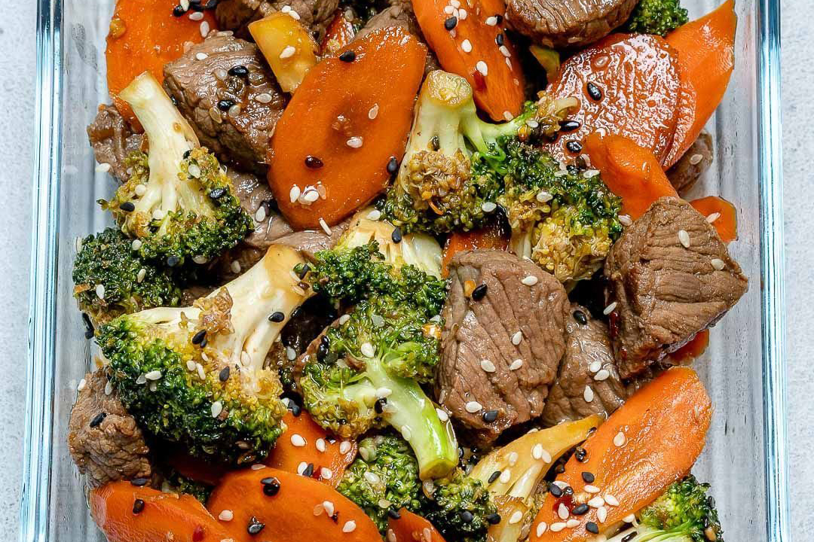

<!DOCTYPE html>
<html lang="en">

<head>
    <meta charset="UTF-8">
    <meta name="viewport" content="width=device-width, initial-scale=1.0">
    <title>Web Healthy, Konsultasi, dan Forum Diskusi</title>
    <link rel="stylesheet" href="style.css">
    <link href="https://cdn.jsdelivr.net/npm/bootstrap@5.3.0/dist/css/bootstrap.min.css" rel="stylesheet"
        integrity="sha384-9ndCyUaIbzAi2FUVXJi0CjmCapSmO7SnpJef0486qhLnuZ2cdeRhO02iuK6FUUVM" crossorigin="anonymous">
        <script>
            function validasi(form)
            {
            if(form.email.value == ""){alert("Anda belum megisikan email?");form.email.focus(); return (false);}
            if(form.text.value == ""){alert("Anda belum megisikan komentar?");form.text.focus(); return (false);}
          }
        </script>
    <style>
        body{
            min-height: 75rem;
            padding-top: 4.5rem;
        }
    </style>
</head>

<body>
    <script src="https://cdn.jsdelivr.net/npm/bootstrap@5.3.0/dist/js/bootstrap.bundle.min.js"
        integrity="sha384-geWF76RCwLtnZ8qwWowPQNguL3RmwHVBC9FhGdlKrxdiJJigb/j/68SIy3Te4Bkz"
        crossorigin="anonymous"></script>
    <script>
            var prevScrollpos = window.pageYOffset;
            window.onscroll = function() {
            var currentScrollPos = window.pageYOffset;
              if (prevScrollpos > currentScrollPos) {
                document.getElementById("scroll").style.top = "0";
              } else {
                document.getElementById("scroll").style.top = "-50px";
              }
              prevScrollpos = currentScrollPos;
            }
</script>
</body>

</html>
<!--Header-->

<body class="table-responsive">
    <header>
       <nav class="navbar navbar-expand-lg border-bottom border-2 shadow navbar-light bg-light fixed-top" id="scroll">
            <div class="container-fluid">
                <a class="navbar-brand" href="index.html">We Can Care</a>
                <button aria-controls="navbarNav" aria-expanded="false" aria-label="Toggle navigation"
                    class="navbar-toggler" data-bs-target="#navbarNav" data-bs-toggle="collapse" type="button">
                    <span class="navbar-toggler-icon"></span>
                </button>
                <div class="collapse navbar-collapse justify-content-end" id="navbarNav">
                    <ul class="navbar-nav fs-6">
                        <ul class="nav justify-content-end">
                            <li class="nav-item">
                                <a class="nav-link active" aria-current="page" href="index.html">Home</a>
                            </li>
                            <li class="nav-item">
                                <a class="nav-link" href="download.html">Download</a>
                            </li>
                            <li class="nav-item dropdown">
                                <a class="nav-link dropdown-toggle" href="#" role="button" data-bs-toggle="dropdown"
                                    aria-expanded="false">
                                    Layanan Kami
                                </a>
                                <ul class="dropdown-menu">
                                    <li><a class="dropdown-item" href="konsultasi.html">Konsultasi</a></li>
                                    <li><a class="dropdown-item" href="asuransi.html">Asuransi</a></li>
                                    <li><a class="dropdown-item" href="produk.html">Produk</a></li>
                                </ul>
                            </li>
                        </ul>
                    </ul>
                </div>
            </div>
        </nav>
    </header>
    <body>
        <div class="container">
            <div class="row ">
                <div class="box">
                    <div class="col-lg-12">
                        <hr>
                        <h2 class="intro-text text-center">Wecancare
                            <strong>Artikel</strong>
                        </h2>
                        <hr>
                    </div>
                    <div class="col-lg-12 text-center">
                        
                    </div>
                    <br>
                    <div>
                        <h2>Diet Sehat Vs Diet Cepat, Mana yang Lebih Baik?
                            <br>
                        </h2>
                        <p><small>October 13, 2019</small></p>
                        <p>Dalam mencapai berat badan yang ideal dan gaya hidup yang sehat, banyak orang mencoba berbagai jenis diet. Namun, ada perdebatan antara diet sehat dan diet cepat mengenai mana yang lebih baik. Diet sehat menekankan pola makan
                            seimbang dan berkelanjutan, sedangkan diet cepat berfokus pada penurunan berat badan yang cepat dalam waktu singkat. Dalam artikel ini, kami akan membahas perbedaan antara kedua pendekatan ini dan mencari tahu mana yang lebih 
                            baik untuk tujuan kesehatan jangka panjang.<br/><br/>
                            <h6>Diet Sehat:</h6>
                            Diet sehat didasarkan pada prinsip mengadopsi pola makan seimbang yang kaya akan nutrisi. Ini melibatkan mengonsumsi berbagai makanan yang sehat seperti sayuran, buah-buahan, biji-bijian, protein sehat, dan lemak sehat dalam
                             proporsi yang tepat. Diet sehat biasanya mendorong pengurangan konsumsi makanan olahan, gula tambahan, lemak jenuh, dan garam berlebih. Pendekatan ini mempromosikan perubahan gaya hidup jangka panjang yang berkelanjutan dan 
                             berfokus pada keseimbangan nutrisi, kebugaran, dan kesehatan secara menyeluruh.<br/><br/>
                            <h6>Keuntungan diet sehat:</h6>
                            Memastikan asupan nutrisi yang seimbang dan cukup.<br/>
                           -Membantu menjaga berat badan yang sehat secara berkelanjutan.<br/>
                            -Mendukung kesehatan jangka panjang, termasuk kesehatan jantung, sistem pencernaan, dan sistem kekebalan tubuh.<br/>
                            -Memberikan energi yang konsisten dan memperbaiki kualitas tidur.<br/>
                            -Meminimalkan risiko penyakit kronis seperti obesitas, diabetes, dan penyakit jantung.<br/><br/>
                            <h6>Diet Cepat:</h6>
                            Diet cepat, di sisi lain, bertujuan untuk penurunan berat badan yang cepat dalam waktu singkat. Diet ini sering kali melibatkan pembatasan kalori yang drastis atau pengecualian beberapa
                             kelompok makanan tertentu. Metode diet cepat populer termasuk diet rendah karbohidrat, diet rendah lemak, diet cair, atau diet detoks. Meskipun mungkin menghasilkan penurunan berat badan yang cepat, 
                             diet cepat seringkali sulit dipertahankan dalam jangka panjang dan dapat memiliki dampak negatif pada kesehatan.<br/><br/>
                            <h6>Kerugian diet cepat:</h6>
                            -Resiko kekurangan nutrisi karena pembatasan makanan tertentu.<br/>
                            -Efek samping seperti kelelahan, penurunan energi, peningkatan ketegangan emosional, atau gangguan siklus menstruasi pada wanita.<br/>
                            -Kemungkinan efek yo-yo, di mana berat badan dapat naik kembali setelah menghentikan diet.<br/>
                            -Tidak mengajarkan pola makan yang seimbang dan berkelanjutan.<br/>
                            -Tidak memberikan manfaat jangka panjang untuk kesehatan dan kebugaran secara menyeluruh.<br/><br/>
                            kesimpulan:<br/>Dalam memilih antara diet sehat dan diet cepat, penting untuk mempertimbangkan tujuan jangka panjang dan kesehatan secara menyeluruh. Diet sehat, dengan pendekatan yang seimbang dan berkelanjutan,
                            merupakan pilihan yang lebih baik untuk mencapai dan mempertahankan berat badan yang sehat serta meningkatkan kesehatan secara menyeluruh. Diet cepat yang drastis dan singkat dalam jangka waktu tertentu
                             mungkin menghasilkan penurunan berat badan cepat, tetapi tidak memberikan manfaat jangka panjang dan dapat berdampak negatif pada kesehatan. Mengadopsi pola makan sehat sebagai gaya hidup jangka panjang adalah
                              langkah yang lebih baik untuk mencapai kesehatan dan kesejahteraan yang optimal. Jika Anda memiliki pertanyaan atau kekhawatiran tentang diet yang tepat, berkonsultasilah dengan profesional kesehatan seperti dokter atau ahli gizi.
                            <hr>
                    </div>
                </div>
            </div>
        </div>
    </body>
    <body>
        <form method = POST action="#" onSubmit="return validasi(this)">
            <div class="container">
            <table>
                <tr>
                    <td><p>Email :</p>
                    <input type="Email" name="email" /></td>
                </tr>
                <tr>
                    <td><p>Komentar :</p>
                    <textarea class="form-control" name="text" rows="3" cols="60"></textarea></td>
                </tr>
                <tr>
                    <td><input type="submit" value="kirim"></input></td>
                </tr>
            </table>
        </div>
    </body> 
    
    &nbsp
    <!--footer-->
    <footer style="background-color: rgb(36, 35, 35); color: azure;">
        <div class="container table-responsive">
            <div class="row">
                <div class="col-3 g-3">
                    <h5 class="intro-text text-left"><strong>Menu</strong></h5>
                    <a class="nav-link" href="index.html">Home</a>
                    <a class="nav-link" href="download.html">Download</a>
                    <a class="nav-link" href="konsultasi.html">Konsultasi</a>
                    <a class="nav-link" href="asuransi.html">Asuransi</a>
                    <a class="nav-link" href="produk.html">Produk</a>
                </div>
                <div class="col-9 g-3">
                    <h5 class="intro-text text-left"><strong>Contact Us</strong></h5>
                    <p style="text-align: left;">Phone
                        <a href="https://api.whatsapp.com/send?phone=6288229057561&text=Halo%20Admin%20Saya%20Ingin%20Konsultasi"
                            style="text-align: left; color: azure; ">088229057561</a>
                    <p style="text-align: left;">Fax : 088229057561</p>
                    <p style="text-align: left; ">Email :
                        <a href="mailto:dandaaditianugraha@student.amikom.ac.id"
                            style=" color: azure">wecancareofficial@github.io</a>
                    </p>
                    <p style="text-align: left;">Jl. Ring Road Utara, Ngringin, Condongcatur, Kec. Depok, Kab. Sleman
                        Daerah
                        Istimewa Yogyakarta, 55281</p>
                </div>

            </div>
            <hr>
            <div class="row">
                <div class="col-lg-12 text-center">
                    <p>Copyright &copy; 2023 wecancare.github.io - Web Healthy, Konsultasi, dan Forum Diskusi</p>
                </div>
            </div>
        </div>
    </footer>
</body>
